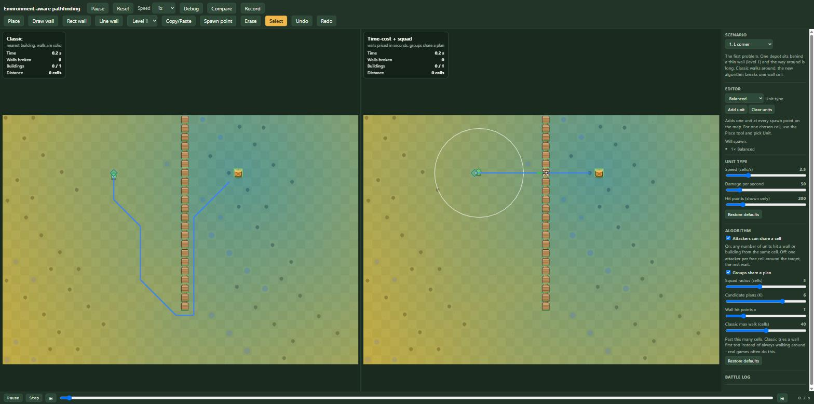

pathfinding part 4: a cap tuned against its own demo, a cache that mostly didn't move the number, and a lighter editor
part 3 was three planner fixes and a run of editor reports. this part is smaller and more mixed: a second pass at the field cache the "still open" list kept pointing at, a walk-distance cap for the classic planner that almost undid the whole demo's point on its way in, a debug view correction, and a round of cutting the editor down rather than adding to it.
try it: live demo · source · part 1: the unit that walked around a wall · part 2: a demo you can break · part 3: the follow-up list
a cap tuned against its own demo
classic never had a reason to give up on walking. however long the way around a wall was, it took it, because nothing in the planner ever compared that distance to anything. real games are not this patient - past some distance a unit gives up on the detour and just breaks in, same as it already did when there was no path at all. the fix is a maxWalk the classic planner checks before committing to the walk:
plan(world: World, troopId: number): Plan | null {
const troop = world.troops[troopId]
this.search.run(this.grid.cellOfPoint(troop.x, troop.y))
const nearest = this.nearestBuilding(world, troop, false)
if (nearest === null) return null
const slot = this.bestSlot(world, troop.id, 'building', nearest.id)
const walkOk = slot >= 0 && this.search.dist[slot] <= this.maxWalk
return (
(walkOk ? this.planTarget(world, troop, 'building', nearest.id) : null) ??
this.planBreakthrough(world, troop, nearest) ??
this.planTarget(world, troop, 'building', nearest.id) ?? // too far, but no wall worth breaking either: walk anyway
this.planNearestReachable(world, troop)
)
}the number I picked first was 30 cells, and the test suite caught the problem with it before I'd looked at a single map by eye: the scenario the whole demo opens on, "L corner", exists specifically to show classic taking a long way around a thin wall - and its own walk-around distance turned out to be about 34 cells. a 30-cell default meant classic started breaking that same wall too, on the flagship scenario, on load, collapsing the exact contrast the scenario's own description promises. "crowd effect", the other scenario built around a long detour, was even closer to the edge at 37.6 cells. I moved the default to 40, comfortably past both:
the cap itself lives in one constant, used both as the sidebar slider's default and the fallback when a scenario doesn't set its own:
export const CLASSIC_MAX_WALK = 40 // default scenario.classicMaxWalk: past this many cells, Classic tries a wall first tooevery built-in scenario still opens with classic walking, same as parts 1 through 3 described it; a custom map built in the editor now gets a real cap instead of infinite patience, and the sidebar's "Classic max walk" slider lets anyone lower it and watch the wall break sooner.
a field cache that mostly didn't move the number
part 3's speed section ended with a list of what might close the remaining 7x gap to the 3 ms target, and a field cache keyed by squad strength and map version was first on it. I built it: strengthOf() caches per unique combination of stacking and per-member speed/dps, and a squad's flow field is cached by start cell, break spec and strength signature -
private fieldKey(spec: Spec, strengthSignature: string, start: number): string {
const breaks = [...spec.allowedBreaks].sort((a, b) => a - b).join(',')
const banned = [...spec.bannedCells].sort((a, b) => a - b).join(',')
return `${start}|${spec.onlyBuilding}|${spec.noBreaks}|${breaks}|${banned}|${strengthSignature}`
}- both cleared on every map-version change, since a destroyed wall changes the grid a cached field was computed against. caching is restricted to the single-start-cell case: the flow field's settle parameter early-exits once its target cells are finalized, so a field cached while settling for one target is not provably complete for a different one, and the only call shape safe to reuse is the one where there is exactly one start cell and no early exit.
21.71 ms against 21.22 ms - within noise, not the win I was hoping for. the reason is that a squad's own decision was already cached, keyed by leader id, cleared on the same version change: nothing inside one version was ever recomputed for the same squad twice. what the field cache actually buys is narrower than "cache the computation" suggested - cross-squad reuse, when two different squads share a start cell and a composition inside the same version. worth having, not worth overselling.
letting the route show on both panels after all
part 3 described the heat map moving to both debug panels while keeping the route line and squad-radius ring tied to whichever panel was actually selected, reasoning that a route drawn for the other panel would be showing something not true of it - a copy of the unit behaving differently. that reasoning had a hole in it: both panels already draw a followed unit's route from that panel's own world, reading that world's own, currently-real plan - not a copy of anything, the actual route classic (or the squad planner) computed on that side. there was nothing to protect against. dropping the panel restriction was one line:
labels.visible = true
this.drawHalos(world, halos)
// Same troop id in both worlds (same deployments) - followed unit's route shows on both panels, not just
// the one debug.panel points at.
const followed = debug.troopId === null ? undefined : world.troops[debug.troopId]
this.drawWallInfo(world, followed?.isActive() ? followed : undefined)
smaller: a pause button, and a lighter editor
the timeline's scrub bar sat at the bottom with a step button and jump-to-event arrows, but pausing meant reaching back up to the top bar. it now has its own play/pause button right next to the scrub bar, reading and toggling the same state the top-bar one does - scrubbing back through a run and pausing it are in the same place now.
the rest is subtraction. the sidebar's "new unit type" and "new building type" forms - name, speed, dps, hp inputs, a button - came out entirely: three unit types and three building types cover every scenario here, and a form for a fourth was never load-bearing. "units per drop" lost its slider too; "Add at spawn points" is now "Add unit" and always adds exactly one, so getting to three units for the crowd-effect scenario is three clicks instead of a slider drag. the unit-type label next to its dropdown gets a small mention only because of what caused it to sit slightly off: the dropdown had a bottom margin left over from when the label used to stack above it, which pulled its visible center a few pixels off the label's - one of those bugs that is invisible until you actually look for it, which is true of most of the fixes in this part.
the whole thing in one paragraph
a cap for classic that needed its own number tuned against the demo it was supposed to serve, not the other list item it came from; a field cache that turned out to mostly duplicate a cache that already existed, which is itself the more useful finding than the cache; a debug restriction that was more cautious than the code underneath it actually needed; and an editor that is smaller than it was at the start of this part, on purpose. none of these are large on their own. together they are the difference between a demo that happens to work and one where the numbers on screen mean what the sidebar next to them says they mean.